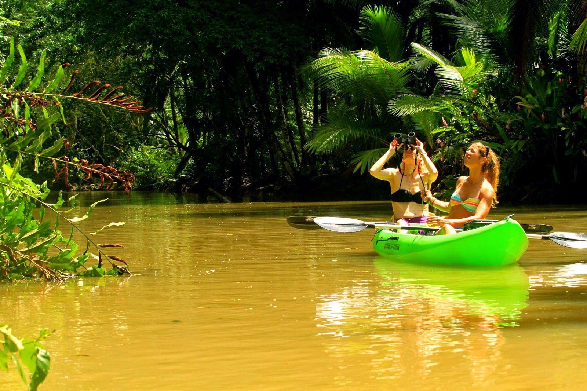
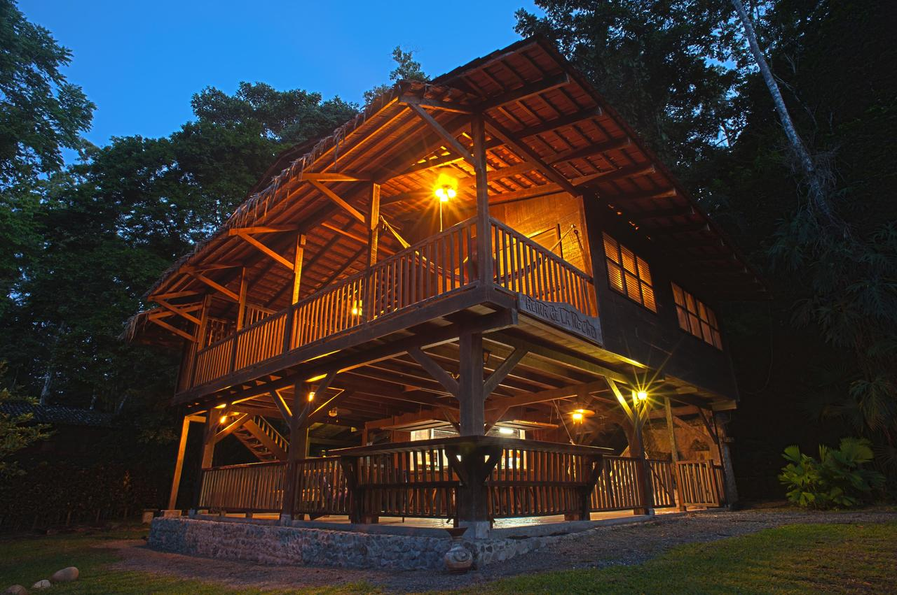
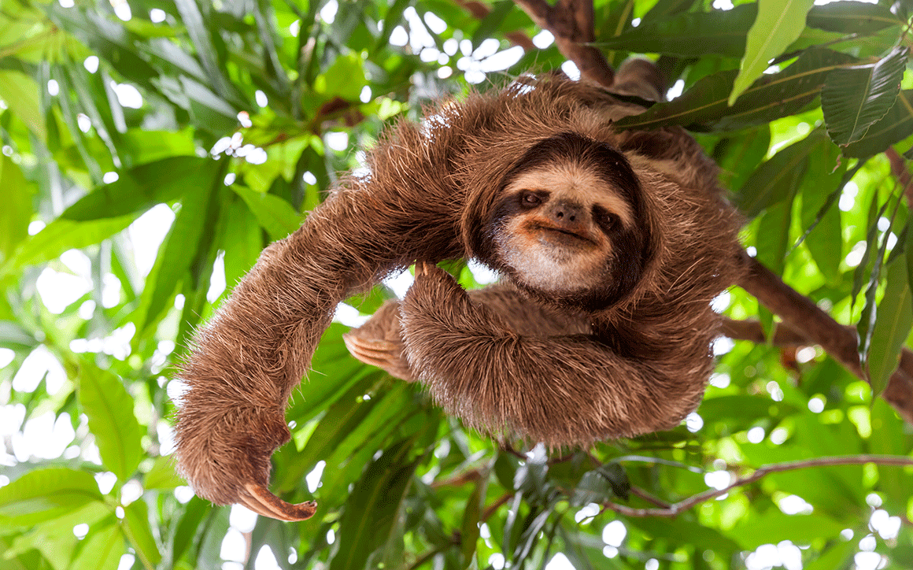

Punta Uva
Punta Uva está enmarcado dentro del Refugio Nacional de Vida Silvestre Gandoca-Manzanillo y está localizado a 8 kilómetros al sur de Puerto Viejo. En este lugar se encuentran algunas de las playas mas hermosas de Costa Rica, galardonadas con la Bandera Azul Ecológica, lo cual atrae a numerosos visitantes que llegan a descubrir estos paradisíacos paisajes de aguas turquesas, arenas claras y un frondoso bosque tropical.



Actividades
Ofrece la posibilidad de practicar kayak y diversas actividades relacionadas con el mar, esta temporada veremos gente de todas partes haciendo picnics y acampando en diversas zonas, punta uva es conocida por la amistad de su gente.
Hospedajes
La mayoria de los lugares de hospedaje en punta uva son sumante comodos, lugares que se encuentran rodeados de naturaleza y muchos de animales de la zona lo cual es sumamente atractivo para sus visitanes .
Flora y Fauna
Una parte de Punta Uva se encuentra dentro de la reserva natural de Gandoca-Manzanillo, conservando la belleza natural así como la flora y fauna. Las playas de Punta Uva, de arena blanca, han sido consideradas entre las mas bellas del mundo. Aquí se conjuga la saliente del bosque tropical y los arrecifes de coral.